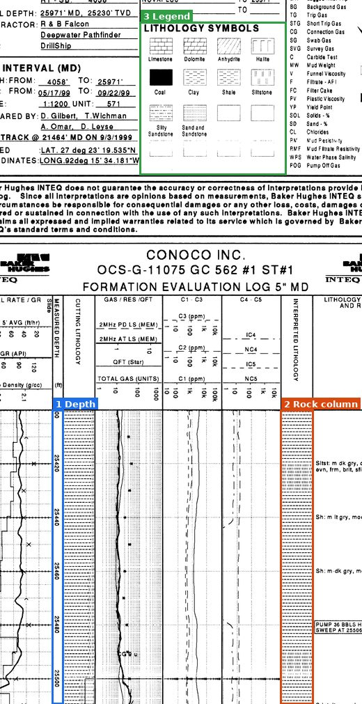

Scan a mud log
Upload a scanned mud log (a .tif image, or a PDF). The scanner reads its depth scale and legend, works out the rock type all the way down the hole, then shows you the log report and where the well sits on the map.
- Upload your mud log image (.tif) with its bounding-box JSON.
- Check the three areas on the scan: the depth numbers, the rock column and the legend. The JSON fills them in; drag an edge to adjust, or draw them yourself.
- Get your report: the rock column with confidence, your own library page, and its place on the map.
Or explore the logs we've already scanned:
Mark three areas on the scan
Pick one below, then drag a box over it on the scan. Drag an edge to adjust a box. Hold the mouse near the bottom of the scan to keep scrolling while you drag.
Show me an example
